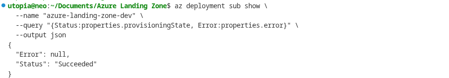

Deployment Guide¶
This guide walks through every step of deploying the Azure Landing Zone, from logging in to verifying resources and cleaning up. Each step is explained so that someone new to Azure can follow along confidently.
If something goes wrong at any step, the error messages from Azure CLI are usually descriptive enough to point us in the right direction. When in doubt, re-run the validation step (Step 4) before attempting a full deployment.
Prerequisites¶
Before we begin, make sure the following tools are installed and ready on the local machine.
| Tool | Why we need it | How to check |
|---|---|---|
| Azure CLI | Deploys and manages all Azure resources from the command line | az --version |
| Bicep CLI | Compiles our .bicep files into ARM templates. It ships bundled with Azure CLI, so there is nothing extra to install. |
az bicep version |
| Azure subscription | The actual Azure account where resources will be created. We need Owner or Contributor role on the subscription. | az account show |
| PowerShell 7+ | Required only for the operational scripts (NSG audit, VM scheduling). Not needed for the core deployment itself. | pwsh --version |
If Azure CLI is not installed yet, follow the official guide: Install the Azure CLI.
Step 1: Login and Set Subscription¶
First, authenticate with Azure. This opens a browser window where we sign in with our Microsoft account.
After logging in, verify that the correct subscription is active:
The output shows the subscription name, ID, and tenant. If we have multiple subscriptions and need to switch, use:
Why this matters: Every Azure CLI command runs against the "active" subscription. If we deploy to the wrong subscription, we will create resources in the wrong place and potentially incur unexpected costs.
Step 2: Set Environment Variable¶
Our Bicep templates use the readEnvironmentVariable() function to read the jumpbox VM's
admin password from an environment variable. This approach keeps secrets out of parameter files
and out of version control.
What is readEnvironmentVariable()? It is a built-in Bicep function that reads a value
from the shell environment at deployment time. Instead of hardcoding a password in a
.bicepparam file (which would be checked into Git), we store it in an environment variable
that only exists in our current terminal session.
Set the password:
The password must meet Azure's complexity requirements:
- At least 12 characters
- Contains uppercase, lowercase, numbers, and a special character
- Does not contain the username
Making it permanent (optional): If we want the variable to persist across terminal
sessions, add the export line to ~/.bashrc (or ~/.zshrc for Zsh):
Security note: Storing passwords in shell profile files is acceptable for dev/lab environments, but for production, consider using Azure Key Vault references or a secrets manager instead.
Step 3: Validate Locally¶
Before talking to Azure at all, we can lint and build the Bicep files locally. This catches syntax errors, typos, and linter warnings without making any API calls.
This script runs two things:
az bicep lint-- checks for style issues and best-practice violationsaz bicep build-- compiles each.bicepfile into an ARM JSON template to verify it is syntactically correct
If the script exits with no errors, our Bicep code is structurally sound. If it reports warnings, they are worth reviewing but will not block deployment.
Step 4: Validate Against Azure API¶
Local validation only checks syntax. This step sends our template to Azure's deployment engine, which checks things that only the cloud can verify:
- Are the resource types and API versions valid?
- Does the subscription have the required resource providers registered?
- Are there any quota or naming conflicts?
az deployment sub validate \
--location westeurope \
--template-file infra/main.bicep \
--parameters infra/main.dev.bicepparam
What does sub mean here? It stands for "subscription." Our main.bicep is a
subscription-scoped deployment (it creates resource groups), so we use az deployment sub
instead of az deployment group.
If validation succeeds, we will see a JSON blob describing the deployment. If it fails, the error message will tell us exactly which resource or parameter caused the problem.
Step 5: Preview Changes (What-If)¶
The what-if operation is like a dry run. It shows us exactly what Azure would create, modify, or delete -- without actually doing it. This is the safety net before real deployment.
az deployment sub what-if \
--location westeurope \
--template-file infra/main.bicep \
--parameters infra/main.dev.bicepparam
The output uses color-coded symbols:
- + (green) -- resource will be created
- ~ (purple) -- resource will be modified
- - (red) -- resource will be deleted
- = (gray) -- resource is unchanged
Review the output carefully. On a first deployment, everything should show as "create."
Step 6: Deploy to Dev¶
Now for the real deployment. This creates all the resource groups, VNets, subnets, NSGs, and other infrastructure in the dev environment.
az deployment sub create \
--location westeurope \
--template-file infra/main.bicep \
--parameters infra/main.dev.bicepparam
What happens during this step:
- Azure creates the resource groups (
rg-hub-dev-weu,rg-spoke-dev-weu,rg-shared-dev-weu) - The hub VNet, spoke VNet, and their subnets are provisioned
- NSGs are created and attached to subnets
- VNet peering is established between hub and spoke
- Key Vault, Log Analytics, Storage Account, and Recovery Services Vault are created
- The jumpbox VM is deployed into the hub
Cost note: The dev deployment disables Azure Firewall and Azure Bastion by default. These
two resources alone cost over EUR 1,000/month, so keeping them off in dev saves significant
money. The enableFirewall and enableBastion parameters in main.dev.bicepparam control
this behavior.
The deployment typically takes 5-15 minutes depending on which resources are enabled.
Step 7: Deploy to Prod¶
The production deployment enables all resources, including Firewall and Bastion.
az deployment sub create \
--location westeurope \
--template-file infra/main.bicep \
--parameters infra/main.prod.bicepparam
Important cost warning: The prod deployment includes Azure Firewall (~EUR 912/month) and Azure Bastion (~EUR 140/month). Make sure this is intentional before running the command. If we are just testing, stick with the dev deployment from Step 6.
The prod deployment takes longer (15-30 minutes) because Azure Firewall provisioning is slow.
Step 8: Verify Deployment¶
After deployment completes, run these commands to confirm everything was created correctly.
Check resource groups exist¶
We should see resource groups like rg-hub-weu, rg-spoke-dev-weu, and rg-shared-weu
(exact names depend on the environment and naming convention).
Check VNets¶
This shows the hub VNet with its address space (10.0.0.0/16).
Check VNet peering¶
Both peering connections should show a state of Connected. If one says "Initiated," the other direction has not been established yet (check the spoke side).
Check NSGs¶
Each subnet should have an NSG attached. The NSG names follow the pattern
nsg-{workload}-{environment}-{region}.
Check Key Vault¶
Check Log Analytics workspace¶
Check Azure Firewall (prod only)¶
This will return results only if the prod parameters were used (or if enableFirewall was
set to true in dev).
Check Azure Bastion (prod only)¶
Same as Firewall -- only present when enableBastion is true.


Step 9: Run NSG Audit¶
The NSG audit script checks all Network Security Groups across the subscription and exports the results to a CSV file. This is useful for compliance reviews and security audits.
Using PowerShell (recommended)¶
First, install the Az PowerShell module if it is not already present:
Then run the audit:
The script produces a CSV file listing every NSG rule, including source/destination, ports, and whether traffic is allowed or denied. Open it in Excel or any spreadsheet tool for review.
Using Azure CLI (alternative)¶
If PowerShell is not available, we can get a quick overview of NSGs using Azure CLI:
This gives us a summary, but not the detailed rule-by-rule export that the PowerShell script provides.
Step 10: Clean Up Resources¶
When we are done testing or no longer need the environment, delete all resource groups to
stop incurring costs. The --no-wait flag tells Azure to start the deletion in the
background so we do not have to wait for each one to finish.
az group delete --name rg-hub-weu --yes --no-wait
az group delete --name rg-spoke-dev-weu --yes --no-wait
az group delete --name rg-spoke-prod-weu --yes --no-wait
az group delete --name rg-shared-weu --yes --no-wait
What does --yes do? It skips the confirmation prompt. Without it, Azure CLI asks
"Are we sure?" for each resource group.
What does --no-wait do? It returns immediately instead of blocking the terminal until
deletion finishes. The resource groups will be deleted in the background (usually takes 5-10
minutes).
Warning: Deleting resource groups is irreversible. All resources inside them -- VMs, disks, VNets, Key Vaults, everything -- will be permanently destroyed.
Auto-Deletion Timer¶
For lab or demo environments, we might want to deploy, experiment for a few hours, and then automatically clean up. This one-liner deploys the dev environment, waits 4 hours, and then deletes everything:
az deployment sub create \
--location westeurope \
--template-file infra/main.bicep \
--parameters infra/main.dev.bicepparam \
&& sleep 4h \
&& az group delete --name rg-hub-weu --yes --no-wait \
&& az group delete --name rg-spoke-dev-weu --yes --no-wait \
&& az group delete --name rg-shared-weu --yes --no-wait
Tip: Run this in a tmux or screen session so it survives if the terminal is closed.
Cost Estimates¶
Understanding cost is critical, especially in a learning or portfolio environment where surprises on the Azure bill are unwelcome. Here is what each resource costs approximately per month in the West Europe region:
| Resource | Monthly Cost (approx.) |
|---|---|
| Azure Firewall (Standard) | ~EUR 912 |
| Azure Bastion (Basic) | ~EUR 140 |
| Jumpbox VM (B2s_v2) | ~EUR 35 |
| Log Analytics workspace | ~EUR 2-5 (minimal data ingestion) |
| Storage Account (boot diagnostics) | ~EUR 1 |
| Key Vault | ~EUR 0 (minimal operations) |
| Recovery Services Vault | ~EUR 0 (no backups configured yet) |
| Dev total (Firewall and Bastion disabled) | ~EUR 38/month |
| Prod total (all resources enabled) | ~EUR 1,090/month |
The dev environment is designed to be cheap enough to leave running for extended periods. The prod environment should only be deployed when actively needed, and cleaned up promptly afterward.
Cost-saving tip: If we want to test Firewall or Bastion without committing to the full prod deployment, we can override individual parameters:
az deployment sub create \
--location westeurope \
--template-file infra/main.bicep \
--parameters infra/main.dev.bicepparam \
--parameters enableFirewall=true
This deploys the dev environment but with Firewall enabled, letting us test firewall rules without deploying everything else that comes with prod.